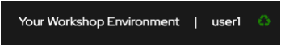
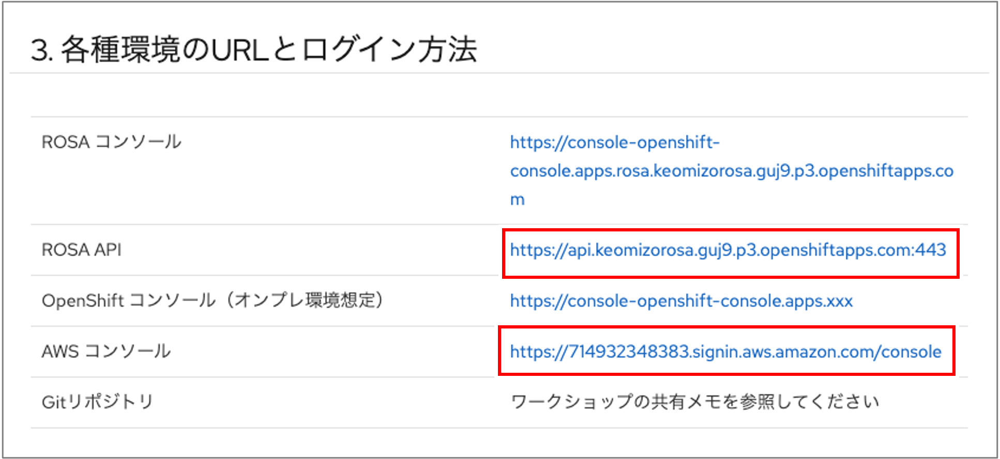

ワークショップ環境 1. 準備 このガイドの右上の「Enter User ID」と薄く表示しているテキストフィールドにユーザID（例: user1）を入力してください。 このような表示になればOKです。入力するUserIDを間違えてしまった場合は、HTTPクエリパラメータ「USERID=user1」の部分を修正してください。  ガイドを少し下にスクロールして、ROSA APIのURLとAWSコンソールのURLが、この図のような書式になっているか確認してください。  2. 自習で演習を利用する場合 このガイドのURLのHTTPクエリーパラメータに、ROSAのサブドメインとAWSアカウントIDを指定することでコンテンツにそれらを反映することができます。 パラメータ名 説明 例 USERID ワークショップのユーザID user1 SUBDOMAIN ROSAのサブドメイン（console-openshift-console.apps.rosa 以降） example.com AWSACCOUNTID AWSアカウントID 123456789012 3. ツールのインストール 3.1. OpenShift CLI のインストール 演習環境が利用可能でない場合は、 https://docs.redhat.com/ja/documentation/openshift_container_platform/4.18/html/cli_tools/openshift-cli-oc#cli-installing-cli_cli-developer-commands に従ってインストールしてください。 演習環境が利用可能な場合は、 https://console-openshift-console.apps.rosa.%SUBDOMAIN%/command-line-tools にアクセスして必要なCLIをインストールしてください。 3.2. skopeo のインストール https://www.redhat.com/ja/topics/containers/what-is-skopeo を参考にしてインストールしてください。 4. 各種環境のURLとログイン方法 ROSA コンソール https://console-openshift-console.apps.rosa.%SUBDOMAIN% ROSA API https://api.%SUBDOMAIN%:443 OpenShift コンソール（オンプレ環境想定） https://console-openshift-console.apps.xxx AWS コンソール https://%AWSACCOUNTID%.signin.aws.amazon.com/console Gitリポジトリ ワークショップの共有メモを参照してください。自習の場合は https://github.com/akubicharm/containerapps-albumapi-java/tree/main をimportやcloneするなどして使ってください。 4.1. OpenShiftコンソールのログイン OpenShiftコンソールにブラウザでアクセス ログイン画面で「users-htpasswd」をクリック ユーザ名に「%USERID%」、パスワードに「 openshift 」を入力してログイン 4.2. OpenShift コマンドラインターミナルの利用 OpenShift コマンドラインターミナルの利用が可能です。最初に利用するときにはコマンドラインターミナルのPodを実行するためのプロジェクトを一つ作成します。 ROSAコンソールにアクセスし、画面右上の「>_」をクリック 初期化画面で「CreateProject」を選択し、プロジェクト名に「%USERID%-term」と入力 「Start」ボタンをクリック 4.3. ローカル環境でのOpenShift CLIの利用 OpenShift API 経由でログイン oc login -u %USERID% -p openshift https://api.%SUBDOMAIN%:443